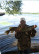

(
( 
Название отчета

- Медали:


- Дата рыбалки:
- 18.05.2010
- Общее количество рыбы:
- 23
- Общий вес улова:
- 2кг
- Рейтинг:
- 15
- Просмотров:
- 15
- 3 0
- Дата создания:
- 20.05.2010
- Комментариев:
- 83
- Участвует в рейтинге FDiary
- Отпущены на свободу
- Текстовая заметка
-
Время рыбалки
04:30 - 20:00
-
Облачность
Ясно
-
Осадки
Без осадков
-
Направление ветра
Юго-Восточный Лёгкий (1 - 6 м/с)
-
Фаза Луны
Луна растущая
-
Температура воздуха
+13°C ... +24°C
-
Температура воды
+14°C ... +16°C
-
Атмосферное давление
Нормальное (750 - 760 мм рт. ст.)
-
Влажность
77%
| Вид рыбы | Кол- во |
Вес (кг) | Время поимки | Приманка | Трофей | Отпущена на свободу |
|---|---|---|---|---|---|---|
| Сом | 1 | 0 | 6:00 - 11:00 | Воблеры Rapala Shad Rap 5 5 1.2 - 4.5 S | ||
| Карп | 1 | 0.4 | 6:00 - 11:00 | Мягкие пластиковые приманки Manns Виброхвост | ||
| Щука | 10 | 1 | 6:00 - 11:00 | N/A | ||
| Лещ | 1 | 0 | 6:00 - 11:00 | N/A | ||
| Окунь | 12 | 1 | 6:00 - 11:00 | Воблеры Rapala Shad Rap 1.2 - 4.5 S |  |
Текстовая заметка
Еще в пятницу на Киев опустилась тяжелая, липкая, удушающая жара. Уже в 8-00 в субботу отметка термометра застыла на 29 градусах. Прославляя имя изобретателя кондиционера мчусь на дачу. Температура на информере бориспольской трассы уже 34 градуса. Особенно впечатлила температура покрытия - 46 выше нуля.
Не смотря на это, я быстренько собираюсь, и в 14-00 уже завожу со второго рывка свой Suzuki. На воде находиться несравненно приятнее - легкий ветерок приятно холодит. Решаю размяться окунем, который не смотря на жару активно поедает любые вертушки меньше 1-го размера и целыми отрядами бодает поппер. Минут за 30 ловлю десятка три окуньков спичечного размера, которые отправляются подрастать. Обстукиваю джигом две стороны своей любимой ямы, но щука молчит.
Еще около получаса наблюдаю за работой воблера по кончику удилища. Безрезультатно.
Ветер стихает, от воды поднимается приятная прохлада. Туман в одурманенной солнцем голове постепенно рассеивается.
Около 19-00, руководствуясь показаниями эхолота, нахожу какое-то подобие угла ямы - якорюсь. Рядом «паркуется» Nils. Произошедшее далее больше похоже на сказку...хотите верьте, хотите нет.
Моя джиговая проводка всегда смешила любителей классики. В классический стиль «подмотка-пауза» я всегда вношу разнообразие несколькими поддергиваниями. С мультипликатором, которым я ловлю уже около месяца эти рывки можно делать гораздо проще, с легкостью меняя их силу и амплитуду. В результате приманка не плавно планирует на дно, а падает, совершая конвульсивные движения раненой рыбки. Возможно, я просто убеждаю себя в этом, но эта рыбалка показала, что рыбе такая проводка тоже нравится.

-
- 23.10.2010 [18:00]
- Удалить
- Simpson123
- Медали:
Вообще-то я не религиозный человек, но если ты есть там наверху, спаси меня,
Супермен! -
- 23.10.2010 [18:00]
- Удалить
- Анонимус M.D.
- Медали:
2 Sheldon: Хорошие новости в том, что у него осталось не так много органов, которые могут отказать!